Mixed Models: Subjects by Stimuli random effects
(Marcello Gallucci)
GAMLj version ≥ 1.0.3 Draft version, mistakes may be around
Intro
In this example we work out analyses for typical subjects by stimuli designs using a mixed model (also called hierarchical linear model or multilevel model). We use the GAMLj module in Jamovi. To follow the examples with the software, be sure to install GAMLj module from within jamovi library.
The design and the analyses are inspired by the discussion of subjects by stimuli analyses reported in Judd, Westfall, & Kenny, 2012
If you are not interested in the long story, you can jump to the first example right away.
The research design
Imagine a one-way repeated measures design with two conditions. Condition A and condition B. Each participant undergoes both conditions. In each condition, a series of stimuli is presented, and for each stimulus the participant produces a response (the dependent variable). If we only consider repeated measures experimental conditions, there are two variants of this design ( Baayen, Davidson, and Bates, 2008 ), a) one with stimuli crossed with conditions, and b) one with stimuli nested in conditions. We analyze both and we will see that from a model-building point of view, they are almost equivalent. That is, the way we analyze the two designs is the same, with very minor differences.
Examples of the design variants
stimuli crossed with conditions
Stimuli crossed with conditions means that the same stimuli are present in all conditions. An example of stimuli crossed with conditions can be: A researcher investigates the effect of colors on reading words. A list of words is randomly chosen from the dictionary and it is used as the set of stimuli in the experiment. The experimental factor is color of the word presented to the participant, repeated within participants: each word is presented to the participant once in blue and once in red on the computer screen. Thus, each participant reads all words twice. To counterbalance order effects, this kind of design is often implemented with different orders of presentation of the conditions, making them split-plot designs. We will not consider counterbalancing here.
Another example can be an experiment in which the dependent variable is the response times to a instrument composed by several tasks. The instrument is proposed to the participants in two different conditions. Thus, each participant responds to the same set of tasks twice, once for each condition.
stimuli nested within conditions
Stimuli nested in conditions means that the stimuli are different across conditions. Consider the previous example regarding words and colors. In this new variant two lists of words are employed: list A is presented in blue fonts and list B is presented in red fonts. The experimental factor is still color of the word presented to the participant. If the lists, for instance, are made of 15 words each, each participant reads 30 words in total, 15 in the blue condition and 15 in the red condition. Also this kind of design can involve counterbalancing.
Another example of this type of design can be a research in which participants are asked to make judgments about African American and White males, with each stimulus person described with a name and photo. In this design, the experimental conditions are the races of the stimulus persons, with the individual stimulus persons nested under condition (cf. Judd, Westfall, & Kenny, 2012 ). If we have, for instance, 20 photos, 10 with White stimulus persons and 10 with African American stimulus persons, the participant responds to each photo producing 20 measures of the dependent variable.
Why the mixed model?
We all know that when we analyze repeated measures designs, we should take into the account the dependency in the data created by the repeated measures. Why? Because the scores of the dependent variable are not independent one each other (a key assumption of the between-subject ANOVA), and the dependency may bias the results. Why might there be dependency? Because in repeated measures designs each participant responds to several stimuli, making the responses more similar within participant than across participants. This, in turn, creates a correlation (dependency) among repeated measures, and this correlation should be incorporated in the statistical models to avoid (or minimize) biases. In a design with response times as dependent variable, for instance, one can observe that participants tend to be different in their average speed of response, independently to the experimental conditions. If so, some participant will be always slower or faster than others, creating a correlation among measures.
When you have designs with multiple stimuli, the same logic applies. Responses to one stimulus may be more similar among themselves than across different stimuli, creating a correlation. A word, for instance, may be longer to read than other words, independently of the participant or the condition, thus making all the response times to it longer than for other words.
One way to capture dependency due to repetition within participants and repetition within stimuli is to employ a mixed model in which the model coefficients are allowed to vary across participants and across stimuli. That is, a model with random coefficients.
The Mixed model
The simplest mixed model that captures (some) dependency among data due to the repeated measures is a model in which the intercepts vary across participants and across stimuli. In other words, the average individual differences across participants are captured by a random intercept across participants, the stimuli average differences are captured by a random intercept varying across stimuli. If we denote by \(i\) each participant, and by \(j\) each stimulus, \(C_{ij}\) the condition variable (for simplicity with two conditions), \(y_{ij}\) the dependent variable score for participant \(i\) and stimulus \(j\), the model will be.
\[ \hat{y}_{ij}=a+a_{i}+a_{j}+b \cdot C_{ij}\] where \(a\) is the fixed intercept, \(b\) is the fixed effect of \(C\) on \(y\), \(a_i\) is the individual intercept associated with participant \(i\), and \(a_j\) is the individual intercept associated with stimulus \(j\).
We can also add random effects of \(C_{ij}\), as we will see later on.
Assumptions
It is important to notice that the approach we are taking requires both participants and stimuli to represent a random sample of a larger population. For participants this is seldom a problem, because participants recruited in research are usually randomly sampled from larger populations of participants. For stimuli, however, this assumption can be tricky. A set of stimuli can be a random sample of a larger population if each individual stimulus is not interesting per se, but only because it has some charateristic shared with the population of stimuli it comes from. Under this assumption, for instance, if we use the word “beer” as a stimulus, we use it because it represents an instance of words (taken from the population of all words in the dictionary), or an instance of 4 letter words (the population would be 4 letter words), or a word indicating a liquid. Had we sampled wine, it would have been a perfectly equivalent stimulus.
Conversely, if we are interested in the particular stimuli we choose, stimuli would not be a random sample of a larger population, and the approach described here would not be correct. For instance, if we really care about the word “beer” as a peculiar and unique stimulus, we should consider it as a level of a factor in the analysis, and not as a random case in the sample of words.
Furthermore, if the stimuli are a sample of a larger population, their numerosity should be as large as possible. As for participants, also for stimuli the larger the sample, the more accurate and powerful are the results.
We now turn to practical examples.
Example 1: Stimuli crossed with conditions
One can follow the example by downloading the file subjects by stimuli and open it in jamovi.
Data can also be opened within jamovi in the jamovi data library,
with the name subjects_by_stimuli.

Design
A one-way repeated measures design has two conditions: A and B. Each participant undergoes both conditions. In each condition, the same 30 stimuli are presented, and for each stimulus the participant produces a response (the dependent variable y). There are 50 participants in the sample. The following table shows how each stimulus is repeated for each condition, and it is measured 100 times, 50 per condition, where 50 is the number of participants.

The following table shows (for the first 17 participants) how each participant is measured 60 times, 30 times for each condition, where 30 is the number of stimuli per condition.
The head of the data file, in the long format, looks like this:

Which stimulus is measured in each row is indicated by the variable
stimulus, which participant in the variable
subj. The experimental conditions are indicated by the
variable cond. The dependent is y.
The model
We employ GAMLj mixed model module. First, we set the variables role
by dropping y in the dependent field, cond in
the factors field (i.e. categorical independent variables).
Then we define the clustering variables. We have two clustering
variables: subj and stimuli. We do not have to
specify anything about the crossing or nesting of the classifications,
the software takes care of understanding the structure of the data.

The fixed effect of cond is
automatically put in the model, so we do not have to do anything
here.

As regards the random effects, we specify that we
want the intercept to vary across participants
(intercept|subj) and across stimuli
(intercept|stimuli). For the moment, we have done with
setting the model up.

Results
The first interesting table is the Model info table,
were some info is given (for the R-squared interpretation see
Mixed Models: Random coefficients
regression).
Then we can explore the random variances. We can see that we have variances larger than zero for the intercepts both across participant (\(\sigma=4.55\)) and across stimuli (\(\sigma=3.88\)) and their impact is quite substantial: \(ICC=.312\) and \(ICC=.279\), respectively. Thus, we can say that it was a good idea to capture those portions of variance by including random intercepts varying across both participants and stimuli.

The fixed effect can now be interpreted as in any one-way ANOVA.

There is a strong effect of condition on the response to the stimuli. The direction of the effect can be evaluated with a plot.


By selecting the option Random effects in the plot
options, we can see the random effects and how they vary across
participants. Because we specified only the intercepts to be random, the
random effects are all parallel, by they do show different heights, as
expected by a varying intercept.
You may have noticed that we interpreted the plot as showing the random effects across participants. We did that because GAMLj, up to the present version, does not allow to plot random effects across different clustering variables. It plots the random effects across the levels of the first clustering variable defined in the input. Thus, if we want to see the random effects across stimuli, we simply change the order of the clustering variables in the input panel, and ask for the plot again.


In the new plot, there are 30 lines representing the effect of condition for each stimulus. Again, the lines are parallel but they show different height
The model (II)
We can now enlarge the random components by adding other random
effects. In particular, we can see whether the effect of
cond varies across participants and across stimuli. Notice
that both effects are possible. Each participant is measured in each
condition, so we can compute the effect of condition in each participant
and evaluate the variance of the effect across participants. Also each
stimulus is measured (is present) in each condition, so we can compute
the effect of condition for each stimulus and evaluate the variance of
the effect across participant.
We do that in GAMLj by adding the required effects in the
Random Effects tab.

Results
With the new model, we see that there is variability in the random
effects of cond across participants, table
Random effects, row subj-cond1,
\(\sigma_i^2=1.15\). whereas there is
very little variance in the random effects of cond across
stimuli, table Random effects, row
stimuli-cond1, \(\sigma_j^2=.0043\).

The random effect of cond across stimuli, furthermore,
is perfectly correlated with the intercepts across stimuli, table
Random parameters correlation, second row, \(\rho=-1.000\), showing that the parameter
is reduntant. We can then remove it.
In the final version of the model we have cond effect
and intercept varying across participants and intercept varying across
stimuli.

The main fixed effect of cond is still there, even
though the degrees of freedom are now much less than the ones of the
model without the random effect of cond.
If we look at the plot of fixed and random effects, we can appreciate the new features of this model. We now have random effects that vary from participant to participant, and in fact the lines representing individual effects are no longer parallel. The fixed effect seems to be equivalent to the previous model effect.

Example 2: Stimuli nested in conditions
We can use the the dataset
One can follow the example by downloading the file subjects on stimuli and open it in jamovi. We have 50 participants with two repeated measures conditions (0 and 1).
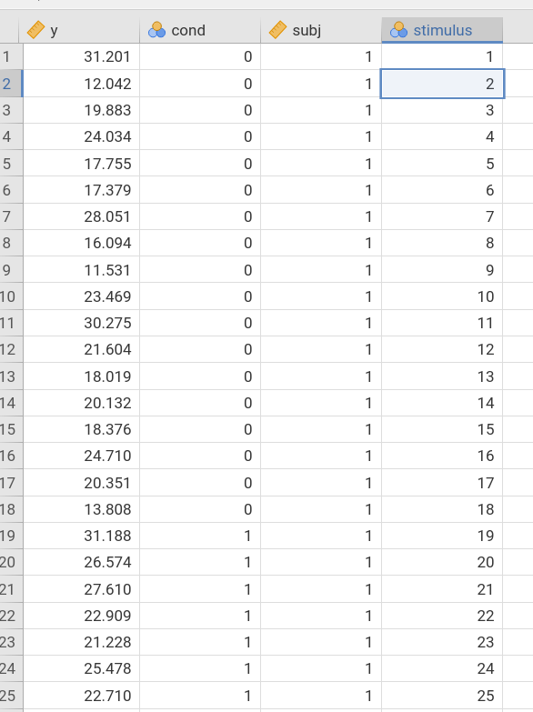
Design
A one-way repeated measures design has two conditions: = and 1. Each participant undergoes both conditions. In each condition, a different set of 18 stimuli is presented, and for each stimulus the participant produces a response (the dependent variable y). There are 50 participants in the sample. The following table (truncated for brevity) shows how each stimulus is present in only one condition, and it is measured 50 times in total, where 50 is the number of participants.
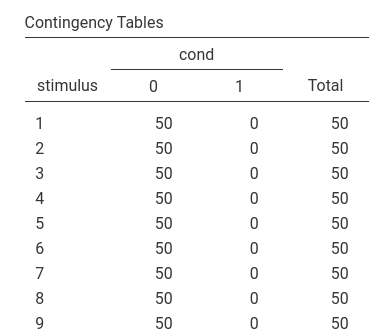 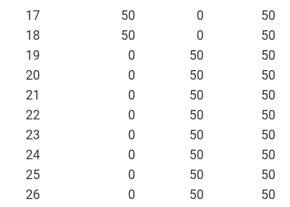
The following table shows (for the first 17 participants) how each participant is measured 36 times, 18 times for each condition, where 18 is the number of stimuli per condition
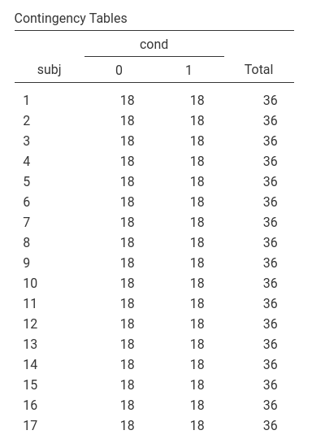
The model
We employ GAMLj mixed model module. First, we set the variables role
by dropping y in the dependent field, cond in
the factors field (i.e. categorical independent variables).
Then we define the clustering variables. We have two clustering
variables: subj and stimuli. We do not have to
specify anything about the crossing or nesting of the classifications,
the software takes care of understanding the structure of the data.
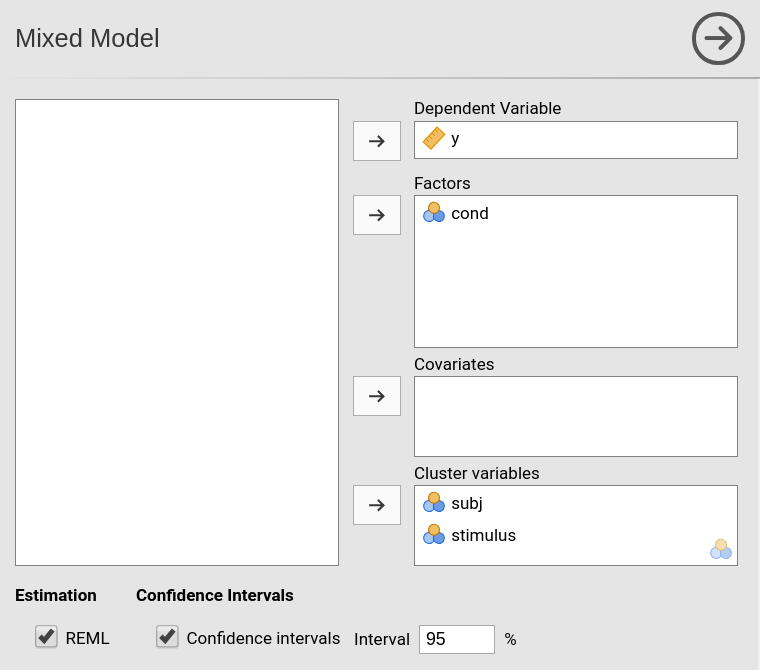
The fixed effect of cond is
automatically put in the model, so we do not have to do anything
here.

As regards the random effects, we specify that we
want the intercept to vary across participants
(intercept|subj) and across stimuli
(intercept|stimuli). For the moment, we have repeated what
we have done in example 1.
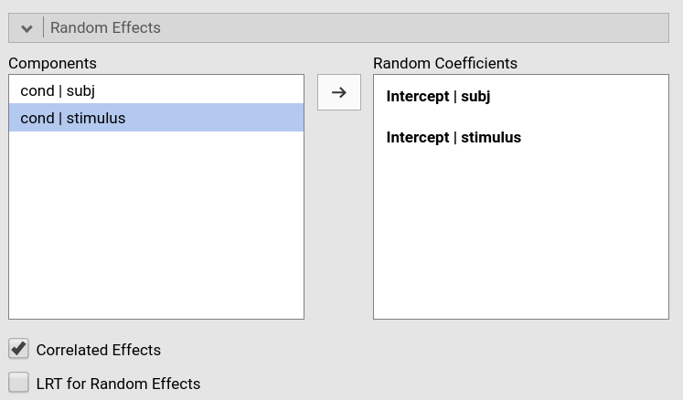
Results
Then go straight to the random variances. We can see that we have variance for the intercepts both across participant (\(\sigma=3.84\)) and across stimuli \(\sigma=5.42\) and their impact is quite substantial \(ICC=.276\) and \(ICC=.350\), respectively. Thus, we can say that it was a good idea to capture those portions of variances by including random intercepts varying across both participants and stimuli. Again, same story as in example 1.

The fixed effect can now be interpreted as in any one-way ANOVA.
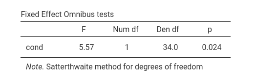
There is an effect of condition on the response to the stimuli. The direction of the effect can be evaluated with a plot.
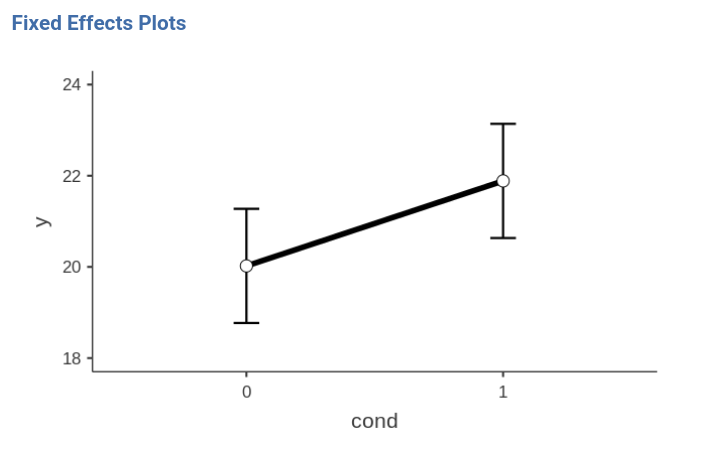
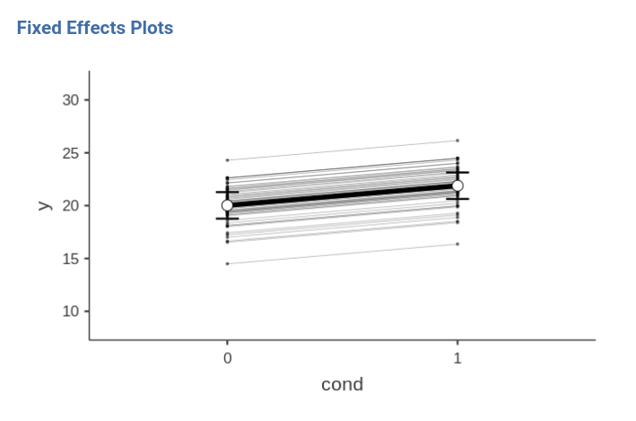
The model II
We can now enlarge the random components by adding other random
effects. This is the only difference between stimuli crossed
with participants and stimuli nested in participants: When
stimuli are nested in participants, the effect of condition cannot
logically be random across stimuli, because each stimulus is employed in
only one condition. Thus, we cannot test whether the effect of
cond varies across across stimuli.
As regards the effect of condition across participants, we can
estimate it as a random coefficient. We do that in GAMLj by adding the
required effects in the Random Effects tab.
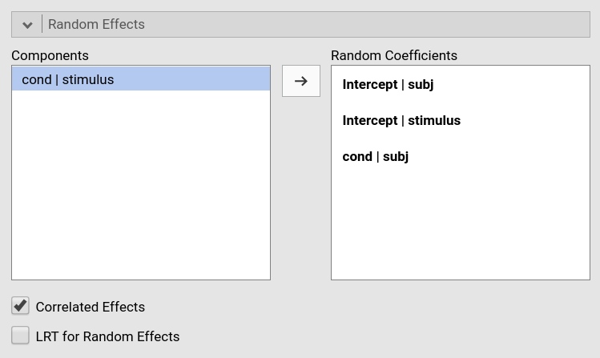
Results
With the new model, we see that there is variability in the random
effects of cond across participants, table
Random effects, row subj-cond1,
\(\sigma_i^2=0.194\).
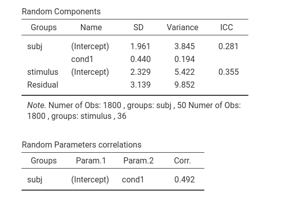
The main fixed effect of cond is still there, and did
not change much.

As in the previous example (example 1), the plot of random effects shows non parallel effects as a consequence of the variability in the random effects.
Conclusion
Participants and Stimuli variability can be captured in a repeated measures design by employing a mixed model with random coefficients varying across participants and across stimuli. Whether stimuli are nested or crossed with participants does not change the general set up of the mixed model. In both cases we can define the intercepts to vary across stimuli to capture stimuli variability. However, when stimuli are crossed with participants, also the condition effect may be random across stimuli, whereas when stimuli are nested in participants, the condition effect cannot be random across stimuli. In both cases, the condition effect can be random across participants.